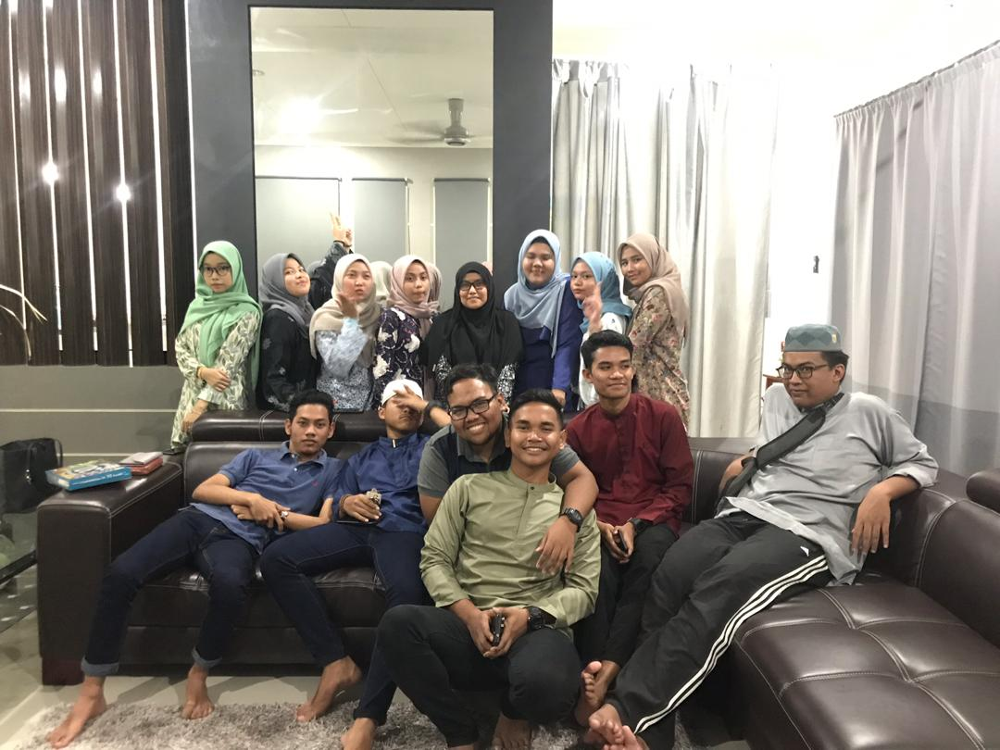
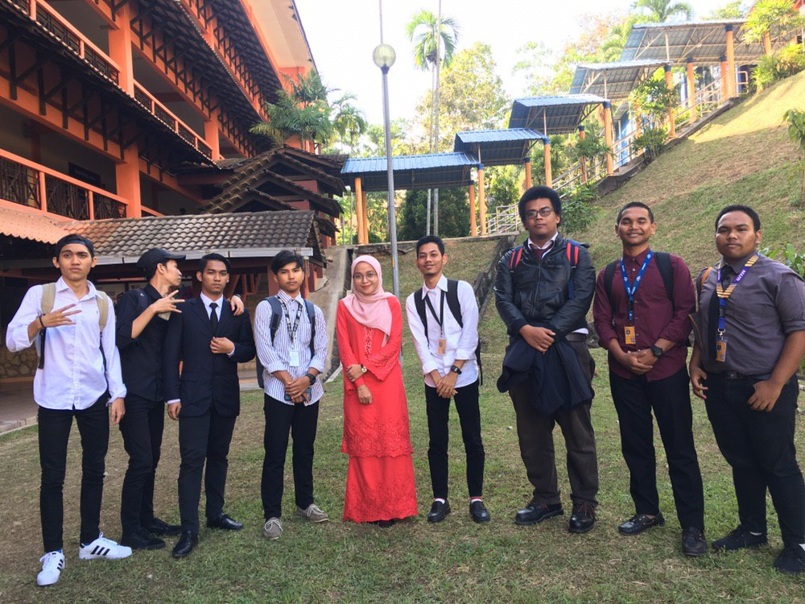
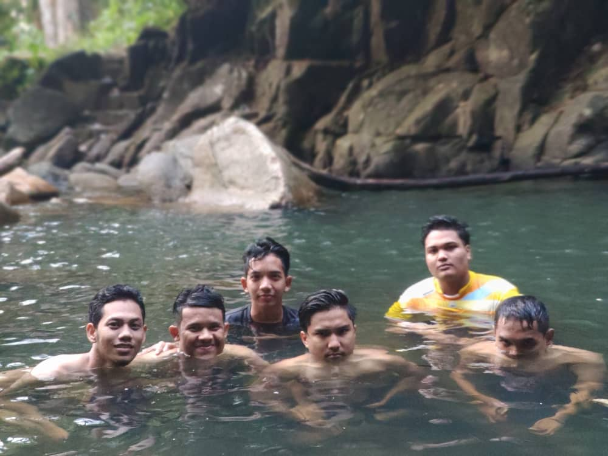
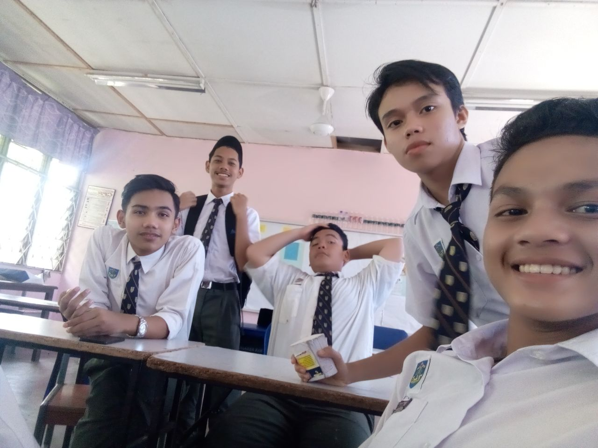

This is about my experiences from high school till university. I feel so blessed to have a good a friends of mine. They always advice me when I make a mistake not judge me easily. Hopefully, our friendship when remain till Jannah. ✌
However, other experience also teach me to be better person and not easily give up. I used to have heart broken when I was in high school but I take that as a challenge for me because life is a journey.
I feel so grateful I can pursue my study in UiTM Machang, the lecturers so kind and understanding. However, sometimes I feel sad because I cannot meet my friends in university due to pandemic. Life has change a lot since that and we need to use online platform for our lecture. Hopefully, this pandemic will over soon and we can do our normal activities.😇